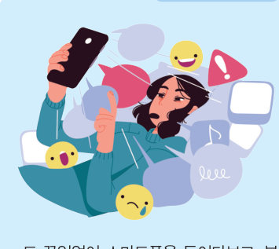
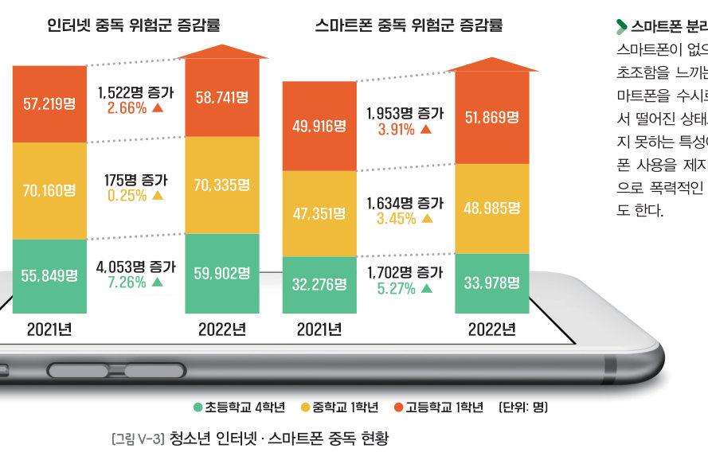
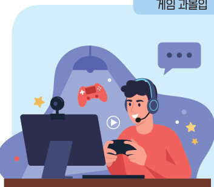
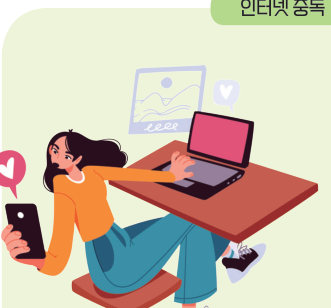
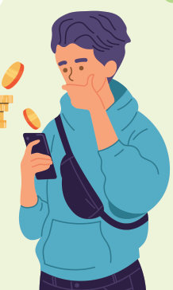
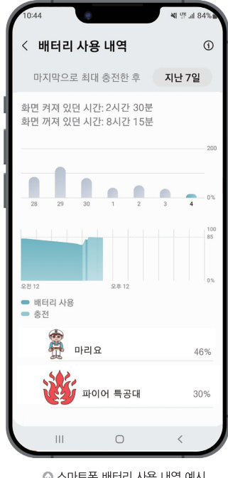

잠깐만 하려던 게임이 새벽까지, 손에서 놓지 못하는 스마트폰. 청소년 중독 현황 그래프로 증가율을 계산해 보고, 네 가지 중독 사례를 가려낸 뒤, 나의 앱 사용 시간과 5WHY 분석으로 나만의 처방전을 만들어 보자.
디지털 기기와 인터넷 이용 등에 지나치게 오랜 시간을 보내거나 집착하여 일상생활에서 우울증, 충동 조절 장애 등의 문제를 일으키는 상태를 디지털 중독이라고 한다. 디지털 기기는 필요한 지식과 정보를 찾고, 친구와 대화하거나 취미 활동을 하는 등 일상생활을 편리하게 해 주지만 지나치게 의존하면 여러 가지 문제를 일으킬 수 있다.

디지털 중독의 대표적인 유형에는 게임 과몰입, 인터넷 중독, 스마트폰 중독, 온라인 도박 등이 있다. 특히 청소년기에 디지털 중독에 빠지면 학습에 부정적인 영향을 미칠 수 있고 학교생활에 적응하기 힘들며, 대인 관계가 원만하지 못해 또래나 부모님, 선생님과 갈등을 겪기도 한다.
디지털 중독으로 일상생활에 어려움을 겪게 되고 다시 게임, 인터넷, 스마트폰에 의존하게 되어 악순환에 빠지기도 한다.



디지털 중독을 예방하려면 먼저 디지털 공간에 의존하는 태도를 개선해야 한다. 만약 나와 친구, 가족이 디지털 공간에 의존하는 태도를 보인다면 ‘스마트폰 중독 진단’, ‘게임 과몰입 진단’, ‘인터넷 중독 진단’ 등을 통해 현재 상태를 점검해 보아야 한다.
특히, 점검 결과 고위험군이나 잠재적 위험의 상태라면 구체적인 예방 계획과 실천 방안을 세우는 등 적극적인 노력이 필요하다. 스스로 해결하기 어렵다면 가족, 친구, 선생님에게 도움을 받아 해결할 수도 있다. 디지털 공간에 의존하지 않으려면 무엇보다도 인터넷, 게임, 스마트폰 사용을 스스로 자제하고 올바른 사용 습관을 기르는 것이 중요하다.
| 스마트폰 사용량 분석 앱으로 사용 시간을 확인하고 사용 제한 시간을 설정한다. | |
| 스마트폰 없이 가족이나 친구와 대화하고, 영화나 공연을 함께 관람한다. | |
| 불안할 때마다 스마트폰을 수시로 확인해 마음을 안정시킨다. | |
| 스마트폰을 보는 시간에 운동이나 다른 취미 활동을 한다. | |
| 중독 상태라도 누구에게도 알리지 않고 혼자의 힘으로만 해결한다. | |
| 잠자기 전에는 스마트폰을 거실에 두고 방에 들어간다. |

| 평가 기준 | 스스로 평가 |
|---|---|
| 디지털 중독의 개념과 유형을 설명할 수 있는가? | |
| 디지털 중독의 예방 및 극복 방안을 수립할 수 있는가? |